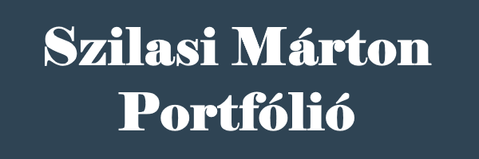

Szilasi Márton vagyok, a Budapesti Műszaki- és Gazdaságtudományi Egyetem gépészmérnök szakos hallagtója. Ennek a portfóliónak a célja bemuatni néhány projektemet, amely esetleg felkelti az olvasó érdeklődését, és kapcsolati helyet biztosítani.